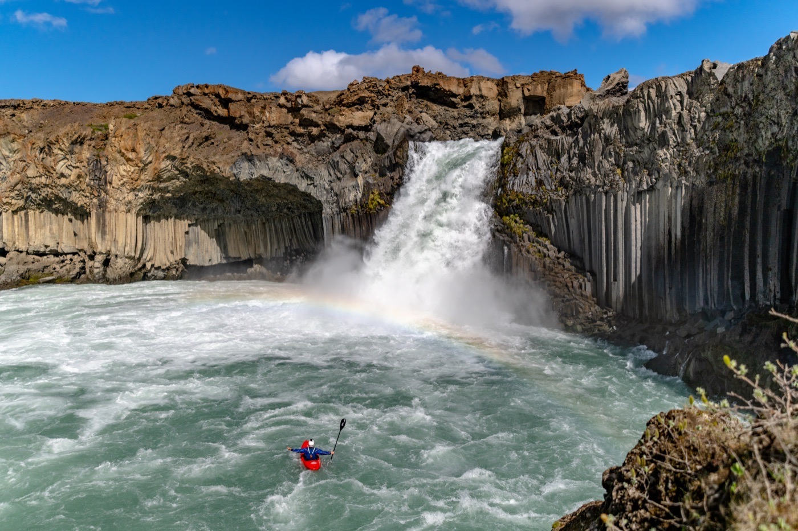

- Location
- Around Iceland
- Rivers
- Waterfalls and canyons
- Date
- June 2024
- Type
- Road trip expedition
- Duration
- 18 days
Chasing the drop
People have been kayaking in Iceland for decades, and hunting waterfalls has always been part of the journey. Andy spent the summers of 2020 and 2021 at a rafting base in the north, which made him curious about what the rest of the country had to offer. With stunning waterfalls, rock formations and canyons, there's plenty to explore.
For Andy, this trip was all about curiosity: exploring new places and testing his skills against the toughest challenges. During the 18-day road trip around the island, he spent his time hunting waterfalls, camping in river valleys and looking for the next project.
Waterfall kayaking isn't for the faint-hearted; it's hard on body and mind. Waking up stiff, tired and cold every day led to plenty of motivational rituals, and plenty of coffee. Running a waterfall draws on years of training, because one mistake can be costly. Strong undercurrents and complex take-offs can psych you out for the rest of a trip. The skill is resetting, and going again.